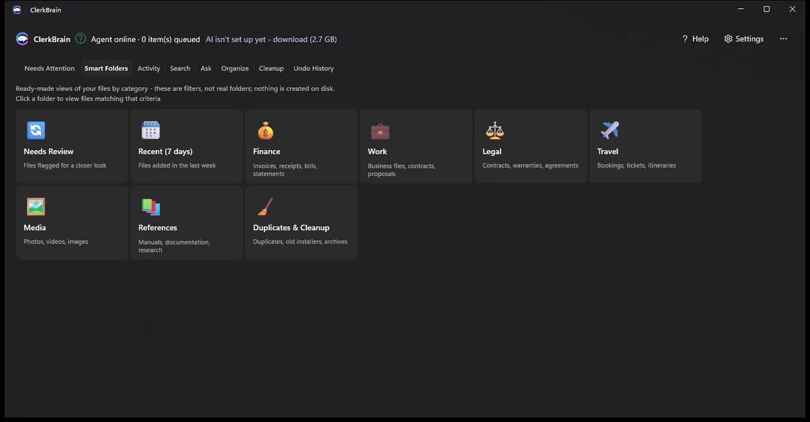
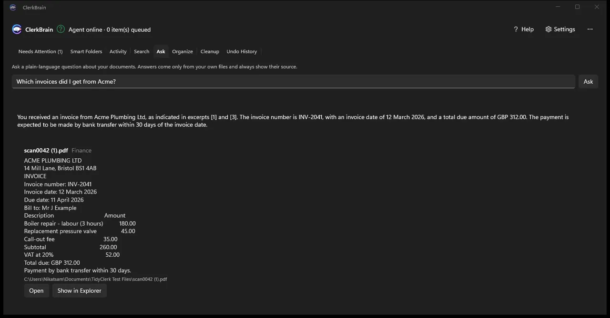
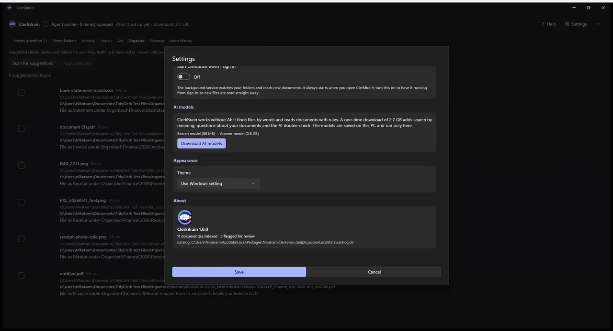
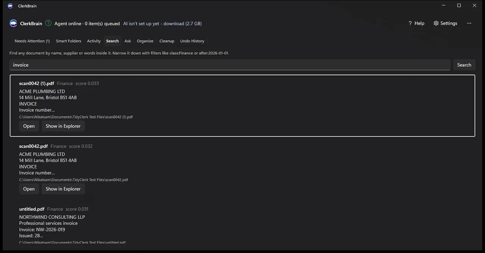
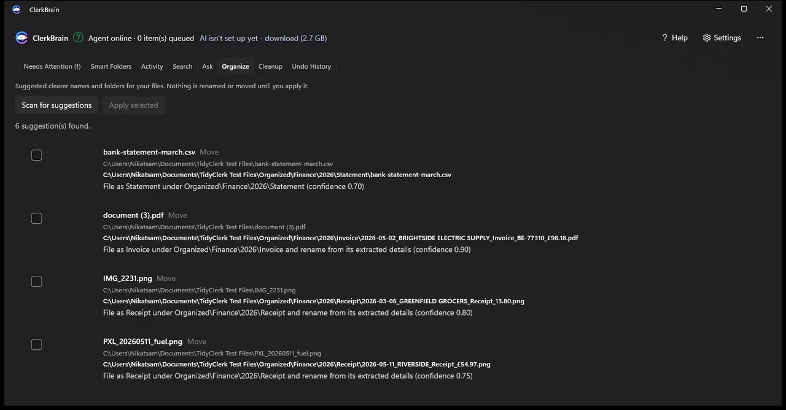

Windows-App · Online
ClerkBrain
ClerkBrain überwacht die Ordner, die Sie auswählen, liest neue Dokumente (PDF, Office-Dateien, Fotos und Scans), extrahiert die wichtigsten Angaben und lässt Sie darin suchen oder Fragen dazu stellen. Vorschläge für Namen und Ordner warten auf Ihre Freigabe, und die KI auf Ihrem Gerät sendet Ihre Dateien nie woanders hin.
Für wen: Für alle, die stapelweise Rechnungen und Belege haben und sie ordnen möchten, ohne sie irgendwohin hochzuladen.
Was es tut
- Verarbeitet PDF, Office-Dateien, Fotos und Scans aus den von Ihnen gewählten Ordnern
- Liest Anbieter, Datum, Gesamtbetrag und Rechnungsnummer aus
- Sucht nach Stichwörtern oder nach Bedeutung, sobald die optionalen KI-Modelle installiert sind
- Beantwortet Fragen in natürlicher Sprache und zeigt die Quelldokumente an
- Schlägt Namen und Ordner vor, mit Rückgängig für jede Änderung
- Markiert unsichere Erkennungen und findet Duplikate und Altlasten
- Erstellt ein Jahrespaket für Ihren Steuerberater
Was es nicht tut
- Ihre Dokumente irgendwohin senden. Die KI läuft auf Ihrem Gerät
- Ohne Nachfrage etwas ablegen. Das automatische Ablegen bleibt aus, bis Sie es einschalten
Screenshots




